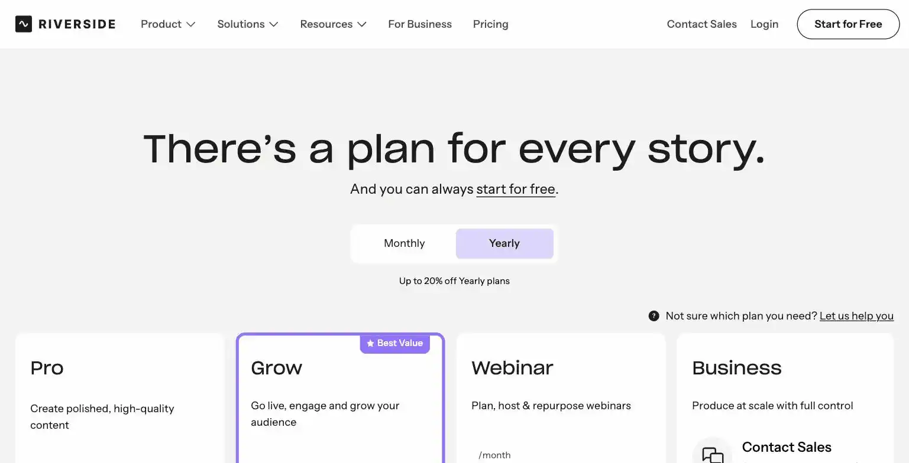
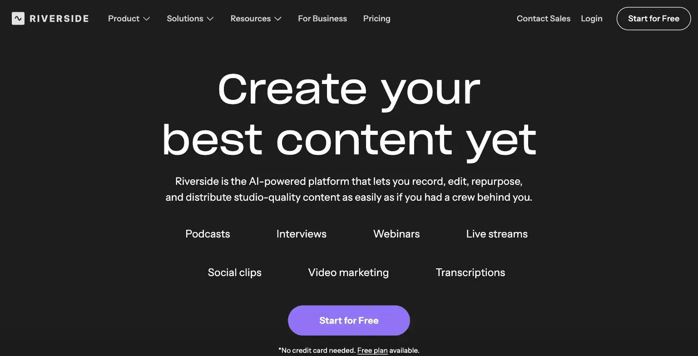

Riverside.fm
Riverside.fm records studio-quality remote podcast and video, locally on each participant's device rather than streaming, so a shaky connection doesn't wreck the final file, with AI-assisted editing and clip generation built in. Pricing runs $24/month (Standard) to $34/month (Pro), both billed annually, with 4K video and 15 hours of monthly transcription reserved for Pro. The site's verdict is Standard covers most solo podcasters, only step up to Pro if you specifically need 4K output or heavy transcription volume.
- Value for price5.5/10
- Capability7/10
- Ease of use7/10
- Trial safety6/10

Riverside.fm records each participant's audio and video locally in the browser and uploads it after the session ends, rather than streaming it live like a video call, which means a dropped connection or bad wifi during the interview doesn't degrade the final recording the way it would on Zoom or Google Meet.

Riverside's core differentiator is local recording: because each participant's feed is captured on their own device at full quality and only uploaded afterward, the final output isn't limited by anyone's internet connection during the actual conversation, a real advantage over live-streamed recording tools for remote interviews.
Example from riverside.fm. Not independently tested by Solos Gems.Pricing breakdown
- Standard ($24/mo billed annually): Unlimited recording, 1080p video, watermark-free exports, AI-assisted editing
- Pro ($34/mo billed annually): 4K video, 15 hours of monthly transcription, advanced AI editing tools
- Free: Limited recording time to test the local-recording workflow before subscribing
Local recording vs. streaming tools
The practical case for Riverside over a simple Zoom recording comes down to reliability and output quality: local recording means every guest's feed comes back at full resolution regardless of their internet connection during the call, and the built-in AI clip generation turns a long interview into short social clips without a separate editing pass. For a solo podcaster who publishes regularly and needs consistent, professional output from remote guests, that reliability is the whole value proposition.
Pros
- Local recording protects output quality from a guest's bad internet connection
- AI clip generation turns long recordings into short social clips without extra software
- Standard tier covers 1080p and unlimited recording for most solo podcast needs
Cons
- 4K output and higher transcription limits are locked behind the pricier Pro tier
- Narrow audience, no value if podcasting or video interviews aren't part of your business
- Learning curve for the full editing suite beyond basic recording